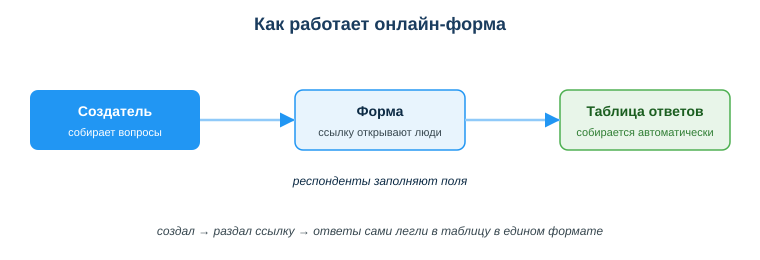
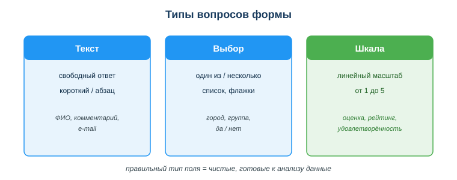

Дисциплина: Применение информационно-коммуникационных и цифровых технологий
Результат обучения: РО 2.2 — использование услуг веб-порталов и цифровых сервисов · Объём темы: 2 часа
Квалификация: 4S06130103 «Разработчик программного обеспечения»
Представь обычную ситуацию из учёбы. Староста пишет в общий чат: «Срочно скиньте ФИО, номер группы и телефон для справки». Через пять минут в чате каша: кто-то прислал имя без фамилии, кто-то телефон в формате «8 701», кто-то «+7 701», кто-то ответил в личку, а двое вообще промолчали и вспомнят об этом завтра. К вечеру половина данных потеряна, а собрать оставшееся в одну таблицу — отдельная мука: копировать каждое сообщение вручную, выправлять формат, искать дубликаты.
Теперь представь второй вариант. Тот же староста за пять минут собирает онлайн-форму, кидает в чат одну ссылку — и всё. Каждый заполняет поля сам, телефон проверяется на формат прямо при вводе, обязательные поля нельзя пропустить, а ответы автоматически складываются в таблицу в едином виде. Староста открывает таблицу — данные уже готовы к работе.
Разница между этими двумя историями — это и есть тема занятия. Но для тебя как для будущего разработчика она важна вдвойне. Во-первых, ты сам будешь работать в команде, где задачи, документы и общение разнесены по разным сервисам, и от того, насколько грамотно команда это организовала, зависит, теряется информация или нет. Во-вторых — и это главное — формы и опросы это не «офисная мелочь», а основной способ собрать требования и обратную связь от пользователей. Любой нормальный продукт начинается с вопроса «что нужно людям?», и ответ на него чаще всего собирают именно формой. Поняв, как устроена форма изнутри, ты заодно начинаешь понимать, как устроены продукты, которые тебе предстоит создавать [1; 7].
После изучения темы ты сможешь:
Начнём с точного определения, а потом разберём его по частям.
В этом определении три важных слова. «По одной ссылке» — тебе не нужно ничего рассылать каждому отдельно, достаточно раздать один адрес. «Автоматически» — ты не переписываешь ответы руками, сервис делает это за тебя. «В едином формате» — все ответы приходят одинаково оформленными, потому что формат задаёшь ты при создании формы, а не каждый отвечающий по-своему.
Сравни это с привычным сбором данных через чат. В чате каждый отвечает как хочет: разный порядок полей, разный формат телефона, пропущенные данные, ответы вперемешку с обсуждением. Форма убирает весь этот хаос на корню, потому что структуру задаёт создатель один раз, а не каждый отвечающий заново.
Где формы применяются на практике: опросы и анкеты, регистрация на события (хакатон, конференция, мастер-класс), тесты и викторины с автоматической проверкой, сбор заявок, и — самое важное для разработчика — сбор требований и обратной связи от пользователей продукта. Когда команда хочет понять, какая функция нужна пользователям или что им не нравится в приложении, она почти всегда делает это формой.
Это ядро темы — пойми его, и всё остальное встанет на места. Посмотри на схему «Как работает онлайн-форма» (приложение А) и проследи путь данных слева направо: Создатель → Форма → Таблица ответов.

Шаг 1. Создатель собирает вопросы. Ты (создатель) открываешь сервис, например Google Forms, и описываешь вопросы: пишешь текст вопроса, выбираешь тип ответа (об этом — в 4.3), отмечаешь, какие поля обязательны. На этом этапе ты по сути проектируешь будущую таблицу: каждый твой вопрос станет столбцом, а каждый присланный ответ — строкой. Это ключевая идея: форма — это «лицевая сторона» таблицы, удобная для человека, а таблица — её «изнанка», удобная для обработки.
Шаг 2. Форма раздаётся по ссылке. Сервис создаёт уникальный веб-адрес твоей формы. Ты копируешь ссылку и раздаёшь её любым способом — кидаешь в чат, отправляешь письмом, размещаешь на сайте, превращаешь в QR-код для печатной афиши. Каждый, кто открыл ссылку, видит одну и ту же форму с одинаковыми вопросами.
Шаг 3. Респонденты заполняют поля. Люди открывают ссылку и отвечают. Здесь работают две полезные вещи. Обязательные поля — сервис не даст отправить форму, пока не заполнены отмеченные тобой вопросы; так ты не получишь ответ без телефона, если телефон важен. Валидация (проверка ввода) — сервис проверяет формат прямо при заполнении: если ты настроил для поля с e-mail проверку ответов (валидацию), респондент не сможет отправить «абвгд» вместо адреса. Именно поэтому данные приходят чистыми: ошибки отсекаются ещё на входе, а не всплывают потом в таблице.
Шаг 4. Ответы автоматически попадают в таблицу. Как только человек нажал «Отправить», его ответ мгновенно становится новой строкой в таблице ответов. Тебе не нужно ничего копировать: открыл таблицу — увидел все ответы, собранные к этой минуте, в едином виде. В Google Forms эту таблицу легко открыть в Google Sheets, в МойОфис Формы — в МойОфис Таблице.
Перечитай подпись внизу схемы А: «создал → раздал ссылку → ответы сами легли в таблицу в едином формате». Это вся механика темы в одной строке. И обрати внимание на главную выгоду: ручная работа есть только на первом шаге (придумать вопросы), а сбор и упорядочивание происходят сами. Один раз настроил — и данные собираются без твоего участия, хоть от десяти человек, хоть от тысячи.
Сила формы — не в самом факте её существования, а в правильно подобранных типах вопросов. Тип поля определяет, как человек отвечает и в каком виде ответ ляжет в таблицу. Неправильный тип — грязные данные, которые потом трудно обрабатывать. Посмотри на схему «Типы вопросов формы» (приложение Б): на ней три основных типа с примерами применения.

Тип «Текст» — свободный ответ. Человек вводит ответ словами. Бывает короткий (одна строка — для ФИО, e-mail, города) и длинный, абзацем (для развёрнутого комментария, отзыва, предложения). Когда брать: данные у каждого свои и заранее их перечислить нельзя — имя, адрес, комментарий. Минус текста: данные «грязные» по своей природе. Один напишет «Алматы», другой «г. Алматы», третий «алматы» — для человека это одно и то же, а для таблицы три разных значения. Поэтому текст бери только там, где список вариантов составить невозможно.
Тип «Выбор» — один из вариантов или несколько. Ты заранее задаёшь список ответов, а человек выбирает. Два подвида: выбор одного варианта (переключатели, выпадающий список — например, номер группы, город из списка, ответ «да/нет») и выбор нескольких (флажки — например, «какие языки знаешь: Python, Java, JavaScript»). Когда брать: варианты известны заранее и их немного. Главное достоинство выбора: данные на выходе всегда чистые и одинаковые, потому что человек не печатает текст, а кликает по готовому варианту. Никаких «Алматы / г. Алматы / алматы» — все, кто выбрал город из списка, дадут абсолютно идентичное значение. Поэтому правило: если варианты можно перечислить — делай выбор, а не текст.
Тип «Шкала» (линейный масштаб) — оценка по шкале, обычно от 1 до 5. Человек ставит число на шкале. Когда брать: нужно измерить степень, уровень, отношение — удовлетворённость («оцени организацию мероприятия от 1 до 5»), рейтинг, согласие с утверждением. Достоинство: ответы становятся числами, а числа можно усреднять и сравнивать. Спросишь «понравилось ли мероприятие?» текстом — получишь сто разных фраз, которые трудно свести воедино. Спросишь шкалой 1–5 — получишь средний балл 4,2 и сразу видишь картину.
Вот таблица, которая поможет выбирать тип под задачу:
| Тип поля | Как отвечает человек | Когда брать | Пример |
|---|---|---|---|
| Текст (короткий) | печатает строку | ответ у каждого свой, список невозможен | ФИО, e-mail |
| Текст (абзац) | печатает развёрнуто | нужен свободный комментарий | отзыв, пожелание |
| Выбор одного | кликает один вариант | варианты известны, нужен ровно один | группа, город, да/нет |
| Выбор нескольких | отмечает флажки | можно выбрать несколько из списка | известные языки |
| Шкала 1–5 | ставит число | нужно измерить степень/оценку | удовлетворённость |
Запомни главный принцип, который написан внизу схемы Б: правильный тип поля = чистые, готовые к анализу данные. Чем точнее ты подобрал тип, тем меньше работы по «чистке» данных тебя ждёт потом. Грамотный выбор типов — это не педантизм, а экономия твоего времени на следующем этапе.
Кроме трёх основных, в сервисах есть и другие типы: дата и время (для записи на конкретный день), загрузка файла (например, прикрепить резюме), сетка (оценить несколько пунктов по одной шкале). Принцип тот же: бери тип, который даёт самые чистые данные для твоей задачи.
Собрать ответы — половина дела. Вторая половина — посмотреть, что они говорят. Сервисы дают два взгляда на собранные данные, и оба полезны.
Сводка (автоматические диаграммы). Сервис сам строит наглядную картину: для вопросов с выбором — круговые и столбчатые диаграммы (сколько человек выбрали каждый вариант), для шкалы — распределение оценок и средний балл, для текстовых вопросов — просто список всех ответов. Это удобно для быстрого взгляда «что в целом получилось»: например, сразу видно, что 80 % записавшихся на хакатон из одной группы, или что средняя оценка организации — 4,3.
Таблица (детальные данные). Если нужно работать с ответами по-настоящему — фильтровать, сортировать, считать, сверять — открываешь таблицу. Здесь каждая строка это один ответ, каждый столбец это один вопрос. С таблицей можно делать всё, что ты умеешь делать с электронными таблицами (это тема занятия 06): отсортировать по столбцу, отфильтровать «только группа РПО-23», посчитать средний балл формулой, найти дубликаты.
Простой алгоритм первичного анализа собранных ответов:
Пример. Ты собрал форму обратной связи после мастер-класса: вопрос «оцени пользу от 1 до 5» (шкала) и «что улучшить?» (текст). В сводке видишь средний балл 3,8 — неплохо, но не отлично. Открываешь таблицу, фильтруешь оценки 1–2 и читаешь их текстовые комментарии — оказывается, всем им было «слишком быстро». Вот это и есть анализ: сводка показала «что» (балл средний), а таблица с комментариями показала «почему» (темп) и «что делать» (замедлиться). Этот навык — слушать пользователей через данные — пригодится тебе в любом продукте.
Форма решает одну задачу — сбор данных. Но команде нужно ещё планировать работу, писать документы вместе и общаться. Под каждую из этих задач есть свой класс сервисов, и важно не путать их назначение.
| Класс сервиса | Примеры | Для чего |
|---|---|---|
| Доски задач | Trello, kanban в таблице, GitHub Projects | планирование, распределение задач, спринты |
| Общие документы | Google Docs/Sheets, МойОфис | совместное редактирование текстов и таблиц |
| Мессенджеры и звонки | Telegram, видеоконференции | быстрая коммуникация, обсуждения, созвоны |
| Дизайн-доски | Miro, FigJam | схемы, диаграммы, мозговой штурм |
Доски задач (kanban). Работа разбита на карточки-задачи, карточки лежат в колонках по статусу: «Сделать → В работе → Готово». Каждый видит, кто что делает и на каком этапе задача. Это снимает вечные вопросы «а ты сделал?» и «кто этим занимается?». Для разработчика это базовый инструмент: почти все команды ведут работу именно так. В Trello это визуальная доска, в GitHub Projects то же самое привязано прямо к коду и задачам репозитория.
Общие документы. Несколько человек редактируют один документ одновременно, видят правки друг друга в реальном времени, оставляют комментарии. Не нужно пересылать файлы «версия_2_финал_финал.docx» по почте — документ один, и он всегда актуален. Используется для совместных текстов, заметок встреч, простых таблиц с данными.
Мессенджеры и звонки. Быстрое общение: вопрос — ответ, обсуждение, голосовой или видеосозвон. Важно понимать границу: мессенджер хорош для обсуждения, но плох как хранилище — важные решения и данные из чата быстро тонут в потоке сообщений и теряются. Поэтому из чата ценное переносят в документ или задачу.
Дизайн-доски. Бесконечный холст, где команда вместе рисует схемы, диаграммы, расклеивает стикеры. Незаменимы на этапе проектирования и мозгового штурма, когда нужно «подумать руками» вместе.
Главная мысль раздела: у каждой задачи — свой инструмент, и команде нужны правила, что где живёт. Где обсуждаем (чат), где задачи (доска), где документы (облако). Когда это разведено и все знают правила, исчезает хаос «всё в личке» — состояние, в котором информация разбросана по личным перепискам, ничего не найти и нет прозрачности. Сравни это с уже знакомой проблемой сбора данных через чат: и там, и там беда одна — отсутствие единой структуры. Форма наводит порядок в данных, правила командных сервисов — в совместной работе.
Форма очень легко собирает данные — и именно поэтому с ней легко нарушить закон, даже не заметив. Это самый ответственный раздел темы.
Что такое персональные данные. Это сведения, по которым можно прямо или косвенно опознать человека: ФИО, ИИН, номер телефона, адрес, фото, данные документов. Их обработку в Казахстане регулирует Закон РК «О персональных данных и их защите» от 21.05.2013 № 94-V [3]. Закон требует, в частности, собирать данные только для конкретной заявленной цели и в объёме, который для этой цели необходим.
Принцип минимизации данных — главный практический вывод из закона. Запрашивай только то, что реально нужно для задачи, и ничего «на всякий случай». Логика простая: чем больше лишних данных ты собрал и хранишь, тем выше цена утечки. Не собрал ИИН — не сможешь его потерять.
Разберём типичную ошибку из урока. Ты делаешь форму регистрации на хакатон и «на всякий случай» добавляешь поля ИИН и домашний адрес. Почему это ошибка: для участия в хакатоне ИИН и адрес не нужны — достаточно ФИО, e-mail, названия команды и телефона для связи. Лишние поля не дают пользы, зато создают риск: эти данные надо где-то хранить, кто-то может получить к ним доступ, а в случае утечки пострадают люди, которые тебе доверились. Как правильно: оставить только необходимые поля.
| Поле | Нужно для хакатона? | Решение |
|---|---|---|
| ФИО | да, для списка участников | оставить (текст) |
| да, для связи и подтверждения | оставить (текст с проверкой) | |
| Команда | да, для распределения | оставить (текст/выбор) |
| Телефон | да, для оперативной связи | оставить (текст) |
| ИИН | нет | убрать |
| Домашний адрес | нет | убрать |
| Размер обуви | нет | убрать |
Кроме минимизации, при сборе данных через форму соблюдай ещё несколько правил:
Связь с уже знакомым тебе материалом: всё это — то же обезличивание и дата-минимизация, о которых шла речь в самом начале курса (занятие 01) и в темах об информационной безопасности (занятия 09–10). Форма просто новый контекст, где эти принципы критически важны, потому что собрать чужие данные становится делом одной минуты.
Может показаться, что тема «про формы» — это что-то для старост и организаторов, а не для программиста. Это не так, и вот почему.
Во-первых, разработчик почти никогда не работает один. Командные доски задач, общие документы и чаты — это его ежедневная рабочая среда, такая же, как редактор кода. Не уметь работать в этой среде — значит выпадать из команды.
Во-вторых, формы и опросы — это инструмент сбора требований и обратной связи, без которого не построить нормальный продукт. Прежде чем писать приложение, надо понять, что нужно пользователям; после запуска — узнать, что не так. И то, и другое часто собирают формой. Понимая, как форма устроена (поля, типы, валидация, таблица ответов), ты понимаешь и логику простого веб-приложения: ведь любая регистрация или анкета на сайте — это, по сути, та же форма, только написанная кодом. Когда позже ты будешь писать собственные формы на HTML и обрабатывать введённые данные, ты уже будешь понимать, что происходит «под капотом»: те же поля, те же типы, та же проверка ввода, та же запись в таблицу (базу данных).
То есть эта тема — мостик между «пользоваться готовым сервисом» и «создавать такой сервис самому». И принцип минимизации данных, который ты освоил здесь на готовой форме, — это ровно тот принцип, по которому ты будешь проектировать формы и базы данных в своём будущем коде.
Пример 1 — справка для группы (расширение мини-кейса урока). Староста собирал данные группы через сообщения в чате: половина потерялась, формат у всех разный. Правильное решение: создать форму с полями ФИО (короткий текст), номер группы (выбор из списка групп, чтобы не было разнобоя), телефон (короткий текст), оценка организации сбора (шкала 1–5). Разбор: выбор для группы вместо текста гарантирует, что все напишут группу одинаково; обязательные поля не дадут прислать ответ без телефона; ответы сами лягут в таблицу, и справку можно делать прямо из неё. Хаоса больше нет, потому что структуру задал один человек один раз.
Пример 2 — регистрация на хакатон и приватность. Нужно записать одногруппников на хакатон. Поля: ФИО (текст), e-mail (текст с проверкой формата), команда (текст), телефон (текст), готовность к ночному кодингу (шкала 1–5). Разбор: ИИН, адрес и размер обуви не добавляем — они не нужны для задачи (минимизация данных, [3]). В начале формы пишем цель: «данные нужны для организации хакатона и связи с участниками». Проверка ответов (валидация) для поля с e-mail отсекает опечатки в адресах ещё на входе. Шкала готовности позже позволит сравнить участников числом.
Пример 3 — наведение порядка в команде. Команда из 4 человек начинает учебный проект и ведёт всё в личных переписках. К концу недели никто не помнит, кто что делает, важные решения утонули в чате. Разбор: нужна структура — доска задач (Trello) для «кто что делает», общий документ (Google Docs) для решений и заметок встреч, общий чат (Telegram) для быстрой коммуникации. Правило: обсуждаем в чате, но всё важное переносим в задачу или документ. Так информация перестаёт теряться, и каждый видит общую картину.
Основная литература:
Дополнительно:
Нормативные источники РК:
Электронные ресурсы и официальная документация:
Международные рамки:
assets/24_shema-kak-rabotaet-forma.svg. Читается слева направо: Создатель собирает вопросы → Форма (ссылку открывают люди, респонденты заполняют поля) → Таблица ответов собирается автоматически. Подпись внизу — вся механика темы одной строкой.assets/24_shema-tipy-voprosov.svg. Три карточки: Текст (свободный ответ — ФИО, комментарий, e-mail), Выбор (один из / несколько — город, группа, да/нет), Шкала (линейный масштаб 1–5 — оценка, рейтинг, удовлетворённость). Вывод внизу: правильный тип поля = чистые, готовые к анализу данные.Материал подготовлен на основе урока темы (urok.md) и приведённых в конце источников; он расширяет и углубляет содержание урока для самостоятельного изучения. Источники приведены главами и ссылками (без номеров страниц); нормативные акты — с реквизитами.
Материал разработан рабочей группой ТОО «Колледж Хекслет Казахстан» и одобрен к использованию в обучении решением Педагогического совета.